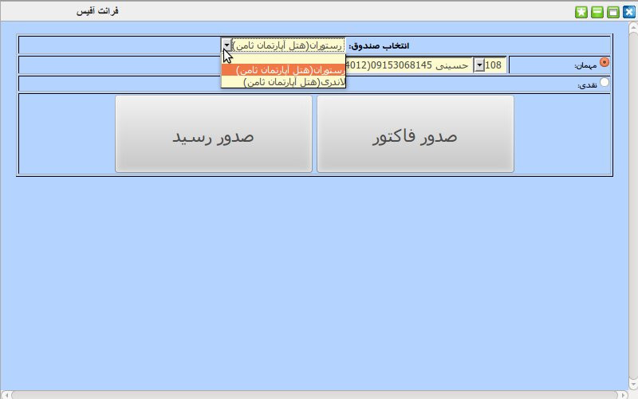
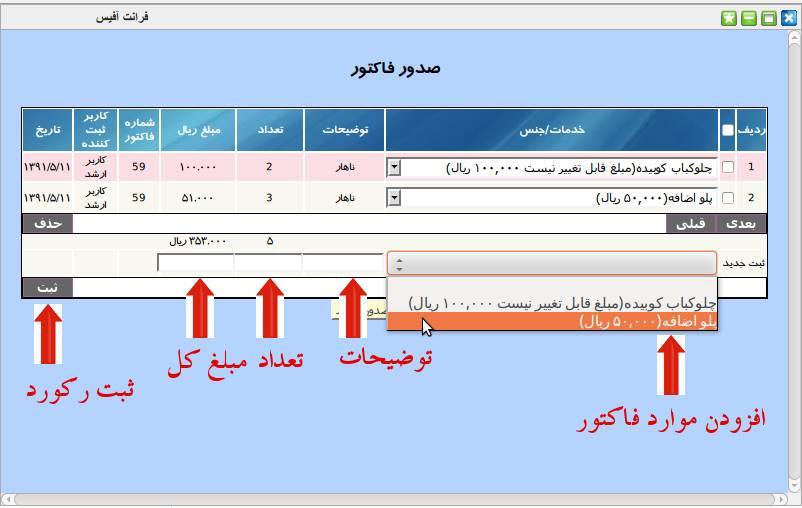

این صفحه جهت صندوق داران و اشخاصی که دسترسی به فرانت آفیس را دارند ساخته شده است که کاربر می تواند صندوق مورد نظری که به آن دسترسی دارد را انتخاب کند سپس اتاق مورد نظر جهت صدور فاکتور یا رسید را انتخاب کند و بعد از آن فاکتور یا رسید صادر نماید در صورتی که صندوق اماکن دریافت نقدی را داشته باشد کار می تواند بدون انتخاب اتاق و مشتری فاکتور یا رسید صادر کند.

پس از انتخاب مشتری نوبت به افزودن خدمات یا اجناس مورد نظر به فاکتور می باشد.

پس از اتمام تمامی موارد دکمه ثبت نهایی را کلیک کنید تا اسناد مربوط به فاکتور در سیستم حسابداری ایجاد شود.